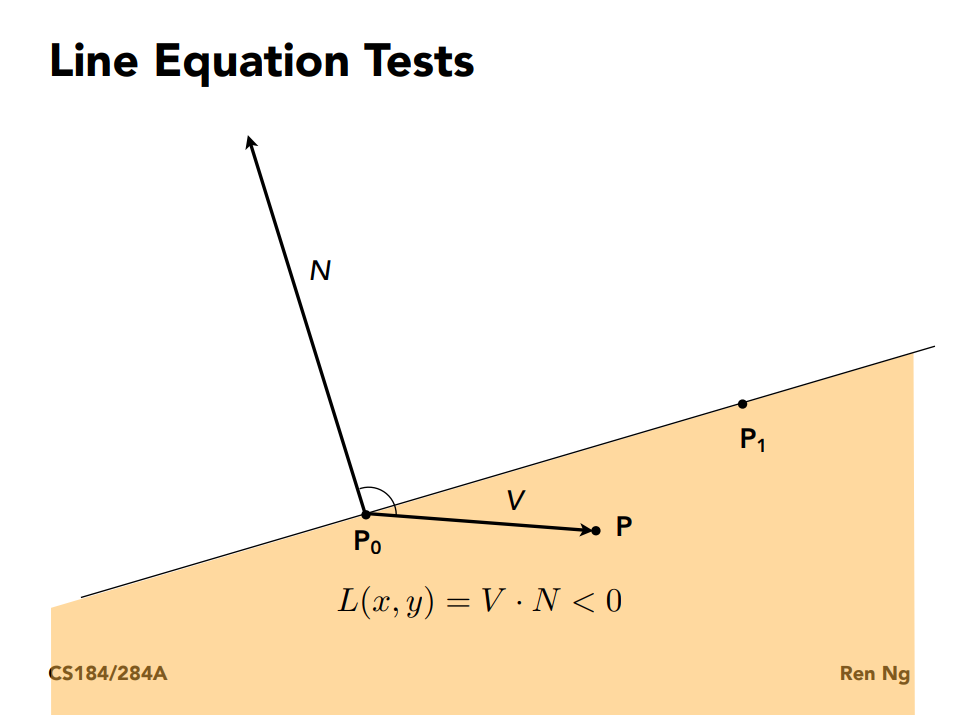
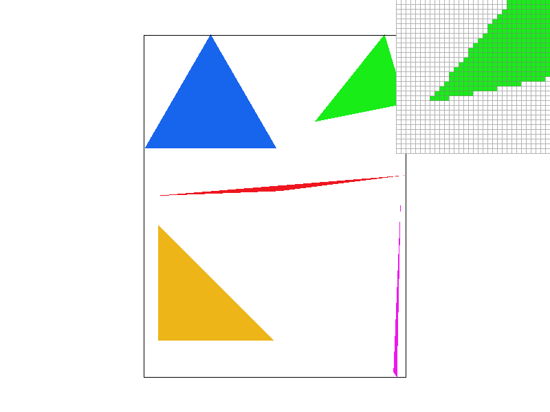
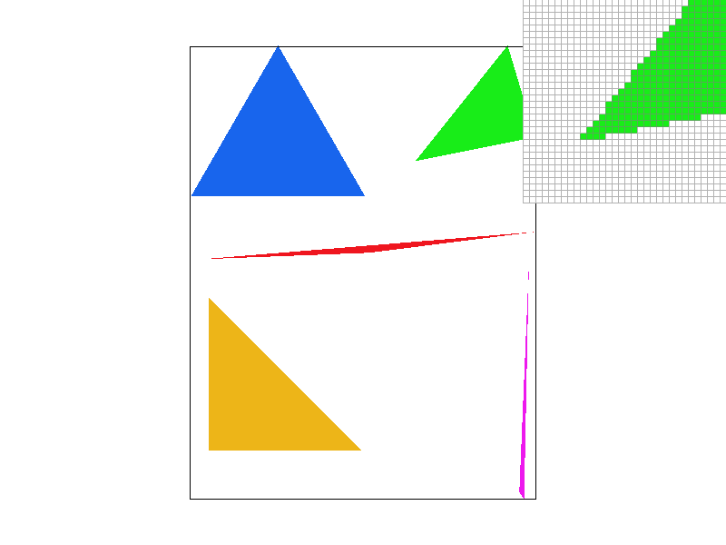
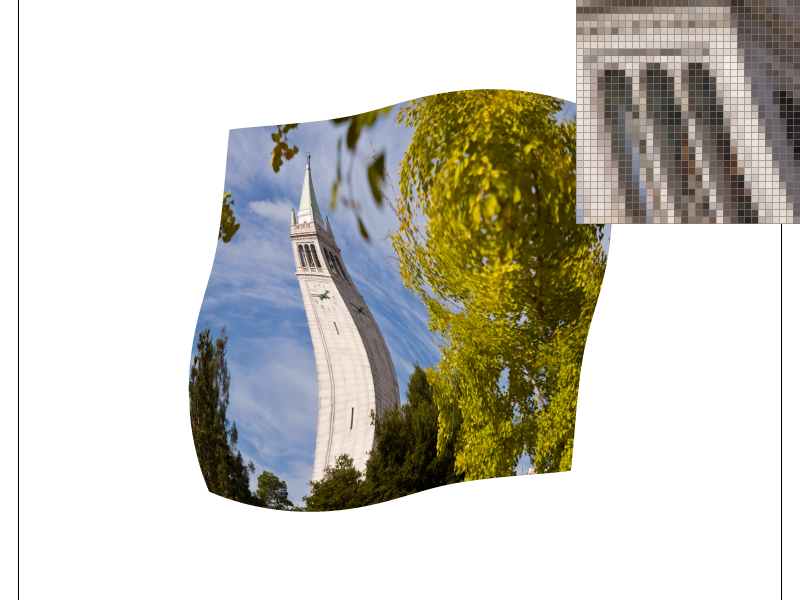
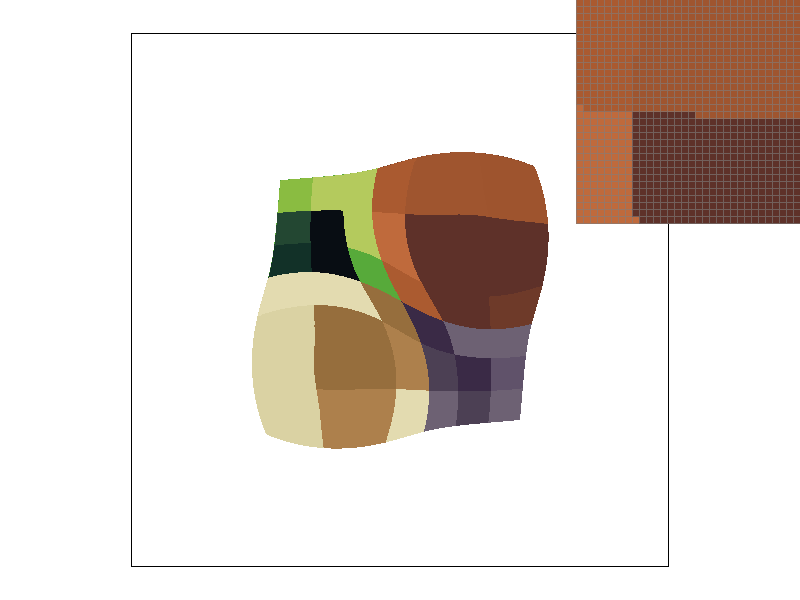

CS184/284A Spring 2025 Homework 1 Write-Up
Link to webpage: https://cal-cs184-student.github.io/hw-webpages-gfedcba/hw1/index.html
Link to GitHub repository: https://github.com/cal-cs184-student/sp25-hw1-abcdefg

Overview
In this assignment, we developed a software rasterizer capable of rendering images from SVG files. The project guided us through the fundamental steps of rasterization, starting with drawing simple triangles for monocolored 2D graphics and progressively adding advanced features like supersampling, hierarchical transformations, and texture mapping with antialiasing to improve visual quality. As someone with experience using game engines like Unity and Unreal, I found this project rather insightful. While I was already familiar with concepts like anti-aliasing, mipmaps, and rasterization from a user’s perspective, implementing these techniques from scratch deepened my understanding of how rendering pipelines actually work, so it was nice to really work with the backend of these processes and how they might be implemented in the first place.
Task 1: Drawing Single-Color Triangles
For this task, we rasterized a simple mono-colored triangle by coloring pixels within its bounds. We first ensured the triangle’s vertices were in counter-clockwise order by computing the cross product of two edge vectors. If the cross product was negative, the vertices were in clockwise order, so we swapped the coordinates to correct the orientation. After determining the correct winding order, we calculated the edge normals (perpendicular vectors to each triangle edge), to check if a pixel was inside the triangle. We then defined the bounding box, the smallest rectangle containing the triangle, by finding the min and max x and y values of the vertices. Finally, we iterated over every pixel within the bounding box, using the three line test from the lecture to check if a pixel should be colored. Since we are checking each pixel in the bounding box exactly once, we meet the runtime requirements (the algorithms are exactly the same).
|

|

|
Task 2: Antialiasing by Supersampling
For this task, we implemented supersampling to reduce aliasing (the jaggedness found at the edges of our images for example, shown below) by increasing the resolution of our sample buffer and averaging subpixel colors. Our primary modifications were resizing the sample_buffer in the RasterizerImp constructor, set_sample_rate, and set_framebuffer_target to account for the higher sampling rate. In rasterize_triangle, we adapted the pixel iteration to sample at sqrt(sample_rate) intervals, rather than just every individual pixel on the x and y axes. We proceed with computing “subpixel” positions and checking if they lie within the triangle. The i + (l + 0.5f) / smp, j + (k + 0.5f) / smp coordinates come from the idea that we want to select the center of each grid we are observing within a pixel. From here, fill_pixel was modified to correctly map subpixel locations within the sample buffer, and we averaged the colors of subpixels within each pixel in resolve_to_framebuffer.
|

|

|
|
Notice the jaggies in Figure 2.1. The edges are noticeably sharp. However, once we introduce supersampling in Figures 2.2 and 2.3, the process softens the jagged lines, with an improvement in smoothness with increased sample rates. By averaging colors for multple samples per pixel, we don't get an abrupt transition of image to white background when observing pixels outside of a triangle.
Task 3: Transforms
The robot got really bored standing around, so he impulsively started dabbing. This was done by adding rotations to the arms and head, then translating them into positions such that the robot is performing the proper gesture.Task 4: Barycentric coordinates
Task 4 asks us to draw a triangle with colors defined at the vertices and interpolated across the triangle area using barycentric interpolation. Recall from lecture that we define barycentric coordinates to be a coordinate system for triangles, where: \[ (x, y) = \alpha A+\beta B+\gamma C \]
Given that \(A, B,\) and \(C\) are vertices in the triangle, and \(\alpha + \beta + \gamma = 1\). The weights \((\alpha, \beta, \gamma)\) determine how much influence each vertex has at any point inside the triangle. We can use the weights and apply them to some \(V = \alpha V_a+ \beta V_b+ \gamma V_c\), where each \(V\) acts as a color, allowing us to interpolate the color values within the triangle. To do this, we can solve for the weights using matrix inversion:
\[ \begin{bmatrix} x_0 & x_1 & x_2 \\ y_0 & y_1 & y_2 \\ 1 & 1 & 1 \end{bmatrix} \begin{bmatrix} \alpha \\ \beta \\ \gamma \end{bmatrix} = \begin{bmatrix} x \\ y \\ 1 \end{bmatrix} \]Rearranging, the barycentric coordinates are given by:
\[ \begin{bmatrix} \alpha \\ \beta \\ \gamma \end{bmatrix} = \begin{bmatrix} x_0 & x_1 & x_2 \\ y_0 & y_1 & y_2 \\ 1 & 1 & 1 \end{bmatrix}^{-1} \begin{bmatrix} x \\ y \\ 1 \end{bmatrix} \]Once computed, these weights can be used for color interpolation:
\[ C(x, y) = \alpha C_0 + \beta C_1 + \gamma C_2 \]where \( C_0, C_1, C_2 \) are the colors at each vertex.
Note that because we are calculating for 3 weights, we shift to a Vector3D with the same x and y coordinates, but with a z set to 1. This allows us to get the \(\gamma\) term back when calculating the weights i.e. we just subtract 1 from w.x and w.y.

Task 5: "Pixel sampling" for texture mapping
In this task, we implement nearest-neighbor and bilinear sampling to retrieve color values from a texture based on the texture coordinates (UV) for a given pixel. For nearest-neighbor sampling, the process is straightforward: rescale the UV coordinates (normalized between 0 and 1) by the dimensions of the texture map and then select the closest texel from the texture grid. This method works by choosing the texel with integer coordinates closest to the scaled UV values.
For bilinear sampling we first locate the four nearest texels surrounding the normalized UV coordinate by identifying the integer coordinates that surround the scaled UV. From here, we perform 1D linear interpolations along the horizontal and vertical axes (as seen from lecture), which brings our texel count from four, to two, and ultimately down to one.
|
|
|
|
|

|
Above, we can see the differences between the two pixel sampling methods. Zooming in on the top of the Campanile, we can see the contrast in artifacts when viewing the columns and their gaps. Supersampling in both cases improves image quality, with not much noticeable difference. Theoretically, the difference between the two will be most apparent in high-frequency images with sudden transitions. We can see this in our images, where bilinear had a smoother transition between the columns compared to the nearest pixel when sampling at a rate of 1. This occurs since nearest pixel just picks the texel closest to it, leading to a more visible boundary, whereas bilinear attempts to interpolate between the four nearest texels for a smoother transition.
Task 6: "Level Sampling" with mipmaps for texture mapping
To implement level sampling for texture mapping, we define three sampling methods: L_ZERO, L_NEAREST, and L_LINEAR. When lsm == L_ZERO, the sampler simply fetches the texel from the zero-th mipmap level, as done in Part 5. For lsm == L_NEAREST, we compute the appropriate mipmap level by evaluating the mipmap size using the texture's UV coordinates, selecting the closest level for sampling. In the case of lsm == L_LINEAR, the method computes a continuous mipmap level by interpolating between the adjacent mipmap levels, and samples from them accordingly to produce a weighted average.
To calculate the correct mipmap level, we compute the Jacobian (dudx, dvdx, dudy, and dvdy) of the UV coordinates, as seen from lecture. These derivatives are passed to get_level through a SampleParams struct, which contains the necessary barycentric coordinates and other values. Inside get_level, the difference vectors (p_dx_uv - p_uv and p_dy_uv - p_uv) are calculated, and then scaled by the texture dimensions to determine the appropriate mipmap level. The level is then returned and used to sample the texture at that level.
|
|
|
|

|
|
Compared to just using the texture map, mipmaps allows us to reduce the amount of memory involved, and has noticeable improvements in computational speed and anti-aliasing. For example, Figures 6.3 and 6.4 had much smoother transitions between the darker brown square and its surrounding lighter colors when viewed against their level 0 counterparts.